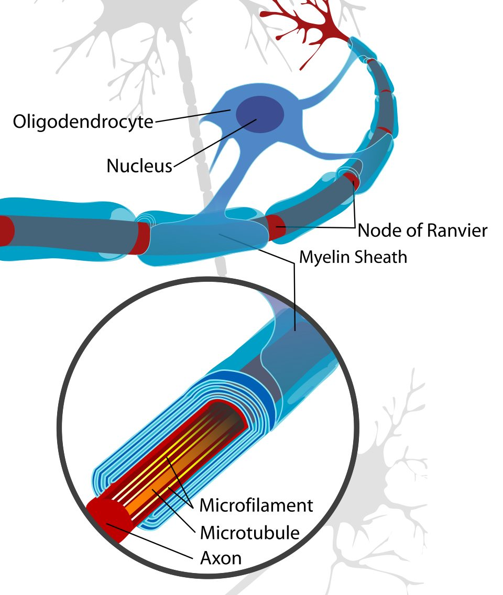

Much more than "glue"
In the 19th century Rudolf Virchow called these cells neuroglia, "nerve glue", because he thought they only held neurons together. We now know they are as numerous as neurons (in the human brain, roughly one for every neuron) and play an active part in almost all their functions. The Spanish school was key to their study: Cajal described astrocytes with his gold stain, and Pío del Río Hortega discovered microglia and oligodendrocytes in 1919-1921.
Types of glia
Astrocytes
They are star-shaped and the most abundant. Their functions:
- They feed neurons, carrying glucose and lactate from the blood vessels.
- They form part of the blood-brain barrier with "end-feet" that wrap around capillaries.
- They remove excess glutamate and potassium from synapses, preventing toxicity.
- They take part in the synapse (the "tripartite synapse") and regulate its strength.
- They regulate blood flow according to activity.
- They form scars (gliosis) after an injury.
In neuromyelitis optica, antibodies attack a protein on astrocytes (aquaporin-4).
Oligodendrocytes and Schwann cells
They make myelin: oligodendrocytes in the central nervous system (each one myelinates several axons) and Schwann cells in the peripheral nerves (each one, a segment of one axon).
Microglia
These are the brain's immune cells. They patrol the tissue, clear debris and microbes and "prune" surplus synapses during development. But when overactivated they contribute to inflammation and damage in Alzheimer's, ALS and other diseases. Some Alzheimer's risk genes (such as TREM2) act in microglia.
Ependymal cells
They line the ventricles and help produce and circulate cerebrospinal fluid.
Myelin


Myelin is a fat-rich membrane wrapped many times around the axon, like insulating tape. It leaves small gaps, the nodes of Ranvier, where sodium channels are concentrated. The nerve impulse "jumps" from node to node (saltatory conduction), making it up to 100 times faster and using less energy: from 1 m/s in an unmyelinated fibre to more than 100 m/s in a myelinated one.
Myelin gives white matter its colour. It starts forming before birth and continues beyond the age of 20: the last areas to be myelinated are in the frontal lobe. See brain development.
Diseases of myelin
- Multiple sclerosis: the immune system attacks the myelin of the central nervous system. Signals slow down or are blocked. Medicines to remyelinate are being researched.
- Guillain-Barré and some neuropathies: affect peripheral myelin.
- Leukodystrophies: genetic diseases of myelin formation.
- Vitamin B12 deficiency and some poisonings.
The tests that detect demyelination are MRI, evoked potentials and electromyography.
Sources
- Río Hortega P. El «tercer elemento» de los centros nerviosos. Bol Soc Esp Biol. 1919;9:69-120.
- Allen NJ, Lyons DA. Glia as architects of central nervous system formation and function. Science. 2018;362:181-5.
- von Bartheld CS, et al. The search for true numbers of neurons and glial cells in the human brain. J Comp Neurol. 2016;524:3865-95.
- Stadelmann C, et al. Myelin in the central nervous system: structure, function, and pathology. Physiol Rev. 2019;99:1381-431.